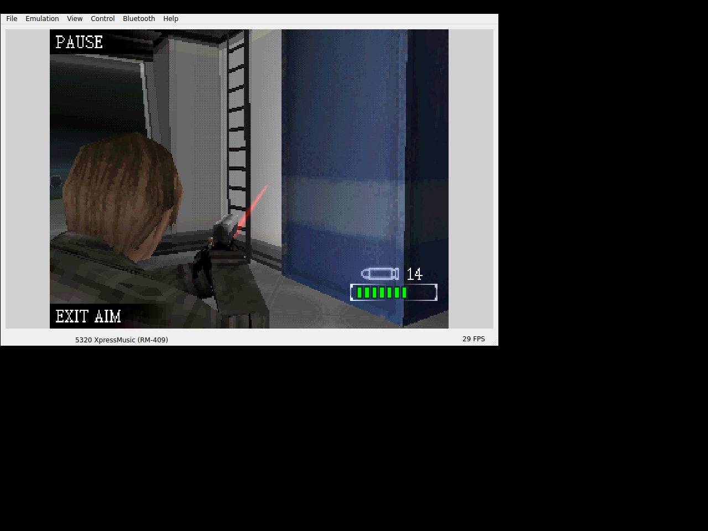

We already had the newer N-Gage environment in preparation. For Degeneration, the next job was to understand and separate its actual actions: what put Leon into aim, what fired, and what reloaded.RD01RD03
15 → 14 → 15.
The retained Linux route moved and turned in the original first scene. Gaming B entered aim and supplied the shot; Gaming A reloaded. The measured ammunition changed from 15 to 14, then back to 15. Center Run and the knife/back selection action remained different keys.RD02RD03RD09

Leon aiming after the original shot, with ammo14 visible. Historical Linux EKA2L1 screenshot; RD02 records15→14 and originalA reload to15.
Open the image for the full original view.
RD90That route did not record an enemy encounter, a completed mission or a save/load result. Its useful evidence was the original scene accepting those specific inputs.RD02
Another title, the existing preparation.
The checkpoint’s unchanged Omni preparation classes rebuilt the required seed entries and renderer resources, rejected changed original input and kept a live-save sentinel through repeated preparation. The new title did not need a fabricated special-case import rule to pass those host contracts.RD04RD05
For the Android Activity, key and reporting checks, we deliberately disabled JNI gameplay. Execution still came from EKA2L1 plus Nokia software. I’m building toward an independent runtime, and this checkpoint belongs to the stopgap work we could use along the way.RD06RD07L02
About these records
This is the N-Gage 2.0 edition. Historical Linux aim/fire/reload, generic preparation contracts and Android framework UI tests retain separate scopes. The image is an unchanged Linux emulator window. No campaign completion, phone audio, actual current Android import/export or independent runtime is inferred. The ambiguous “genereations” discovery recollection is not used to assign a motive to this edition.
The receipts
Selected source lines, investigation notes and recorded feedback. Open a receipt for the original context and scope.
RD01 / Inherited device environment and existing generic preparationCheckpoint investigation notes
Source: Resident_Evil_Degeneration_Bridge_v0.1.0_PRIVATE_CHECKPOINT.zip / Resident_Evil_Degeneration_Bridge_v0.1.0_PRIVATE/README_FIRST.txt · selected lines 3–7, 27–35
Install Resident_Evil_Degeneration_Bridge_v0.1.0_PRIVATE.apk. Android 10+ / ARM64 / OpenGL ES 3.0. Package: com.wakka.redegeneration. The private APK includes your supplied N-Gage 2.0 game and the inherited Nokia 5320 environment. First launch prepares its private files. No separate emulator, firmware selection or launcher screen is required. [... selected excerpt ...] OMNI In Omni Private 0.5.11 or newer, use Add / update bridges and select this APK. It contains original recognition and the same generic N-Gage 2.0 preparation contract used for Bounce and Star Wars. Public preparation rebuilds the game from the exact supplied .n-gage fingerprint and verified shared support. The owner's existing Create public update workflow remains the release path. No separate public Omni update APK is supplied or published here. Complete Android import/export and hosted native gameplay still need your phone check. Host preparation validation is described in VERIFICATION.txt.
RD03 / Distinct original game actions and controller aliasesCheckpoint investigation notes
Source: Resident_Evil_Degeneration_Bridge_v0.1.0_PRIVATE_CHECKPOINT.zip / Resident_Evil_Degeneration_Bridge_v0.1.0_PRIVATE/README_FIRST.txt · selected lines 9–25
PLAY SELECT / PAUSE selects original menus, advances dialogue and opens the paused interface according to the game's current prompt. EXIT AIM / KNIFE / BACK is the separate original right softkey; it also skips opening dialogue. D-pad moves forward/back and turns; simultaneous move/turn is preserved. ACTION / AIM / FIRE is original Gaming B. Press to aim, then press to fire. RELOAD is original Gaming A. RUN is the original center key. STATUS = original 1; MENU = original #. Original keypad preserves the complete separate D-pad, center, digits, *, #, original softkeys, Clear and primary combat actions. ORIGINAL KEYPAD / D-PAD RETURN switches inline in one tap. Android system Back exits gameplay separately from the original game keys. GAMEPAD D-pad/left stick = digital directions; A/RT = action/aim/fire; B/LT = reload; X = original right softkey; Y = original 1 status; Start = original left softkey; Select = original # menu; Enter/center = Run. No second camera stick or replacement game behavior is introduced.
RD02 / Original aiming, shot and reload on the Linux hostCheckpoint investigation notes
Source: Resident_Evil_Degeneration_Bridge_v0.1.0_PRIVATE_CHECKPOINT.zip / Resident_Evil_Degeneration_Bridge_v0.1.0_PRIVATE/VERIFICATION.txt · selected lines 8–16
REAL GAME EXECUTION — LINUX HOST Fresh campaign entered from the original menus and opening dialogue. 3D movement and turning accepted simultaneous held directions. Original B entered laser aiming; another B fired, ammo 15 -> 14. Original A reloaded to 15. Original paused/map/inventory/options interfaces were observed. This does not claim an enemy encounter or campaign completion. Original game audio was generated and captured through a private audio sink; statistics and a 10-second sample are retained in evidence/. This host core differs from the unchanged Android core.
RD09 / Original key evidence and observed fire/reload valuesCheckpoint investigation notes
Source: Resident_Evil_Degeneration_Bridge_v0.1.0_PRIVATE_CHECKPOINT.zip / Resident_Evil_Degeneration_Bridge_v0.1.0_PRIVATE/evidence/original-input-evidence.txt · selected lines 1–7
Original game Controls screenshots: Action/Aim/Attack = B; Reload = A. 5320 service profile, orientation_270: /hardware/input/devices/0/orientation_270 0x0001, 0x00004000, 0x000e, 0x00080000, 0x000f, 0x00100000, 0x0010, 0x00020000, 0x0011, 0x00040000, 0x002a, 0x00000400, 0x0030, 0x00000200, 0x0031, 0x00000001, 0x0032, 0x00000002, 0x0033, 0x00000004, 0x0034, 0x00000008, 0x0035, 0x00000010, 0x0036, 0x00000020, 0x0037, 0x00000040, 0x0038, 0x00000080, 0x0039, 0x00000100, 0x007f, 0x00000800, 0x00a2, 0x00400000, 0x00a3, 0x00800000,0x00a4, 0x00001000, 0x00a5, 0x00002000, 0x00a7, 0x00010000, 0x00c4, 0x00200000, 0x00e4, 0x01000000, 0x00e5, 0x02000000 Runtime profile maps directions 0x10/0x11/0x0e/0x0f; center 0xa7; softkeys 0xa4/0xa5; Clear 1; digits 0x30-0x39; star 0x2a; hash 0x7f. Host observation: B enters aim, another B press fires (15 to 14), A reloads to 15. The original numeric center/run and status/menu alternate bindings are retained.
RD90 / Historical image / Resident Evil: DegenerationHistorical host capture
Source: Resident_Evil_Degeneration_Bridge_v0.1.0_PRIVATE/evidence/degeneration-shot-verified.png
Retained historical host output. Original emulator chrome, where present, is part of the unchanged source image. No phone capture or phone performance is inferred.
Unchanged historical image. Source member: Resident_Evil_Degeneration_Bridge_v0.1.0_PRIVATE/evidence/degeneration-shot-verified.png SHA-256: d607162f6ce19bef8fc44ff7d8eef49b33ea7653b3f27148d2098d3b1a0e09ee Leon aiming after the original shot, with ammo14 visible. Historical Linux EKA2L1 screenshot; RD02 records15→14 and originalA reload to15. Scope: Historical original-game Linux host execution, not Android phone output or an enemy/campaign completion claim.
RD04 / Unchanged Omni preparation rebuilds the seed and keeps savesCheckpoint investigation notes
Source: Resident_Evil_Degeneration_Bridge_v0.1.0_PRIVATE_CHECKPOINT.zip / Resident_Evil_Degeneration_Bridge_v0.1.0_PRIVATE/VERIFICATION.txt · selected lines 34–41
OMNI 0.5.11 — ACTUAL PREPARATION CLASSES Unchanged Ngage2Package, Ngage2Support, NgagePreparation and PreparedDeviceSeed rebuilt all 9,380 seed entries and 31 renderer entries byte-identically. Verified support was adopted from the private APK and pinned service input. Repeated preparation preserved a live-save sentinel; a changed original was rejected. Hash/copy/context and classic-only boundaries use labeled host adapters. The complete Android Add bridges/Create public update/hosted native flow was not executed. No application or original was publicly published.
RD05 / Original installer integrity and stated phone boundaryCheckpoint investigation notes
Source: Resident_Evil_Degeneration_Bridge_v0.1.0_PRIVATE_CHECKPOINT.zip / Resident_Evil_Degeneration_Bridge_v0.1.0_PRIVATE/README_FIRST.txt · selected lines 43–63
VERIFIED HERE Original installer: all 38 records decompress and match embedded SHA-1; 36 unchanged records are selected for the matching FP2 environment. Real Linux EKA2L1 run: fresh campaign, 3D movement/turning, aiming, firing (ammo 15 to 14), reload (back to 15), native paused interface and real audio. Android framework: five tests covering actual Activity startup/layout, inline modes, independent pad/action contacts, controller ownership, early fault recording, renderer repair/save isolation and report export through a real file-backed provider fixture. JNI gameplay is disabled there. Omni's unchanged 0.5.11 preparation rebuilt all 9,380 seed files and 31 renderer files identically from verified sources, repeated preparation kept a live-save sentinel, and a changed original was rejected. Five GLES programs and a real 256-pixel renderer fixture pass on host Mesa. APK CRC, signature/alignment and 9,828 packaging/integrity assertions pass. PHONE CHECK STILL REQUIRED Actual Android native execution, touch comfort, sound, gamepad hardware, pause/resume, Back to Omni, live Downloads export and an in-game save/load round trip. The full campaign and all later protected content were not completed. Linux host execution uses a different EKA2L1 build from Android; its success is useful evidence, not proof of identical handset behavior.
RD06 / EKA2L1, original device dependencies and public preparation boundaryCheckpoint investigation notes
Source: Resident_Evil_Degeneration_Bridge_v0.1.0_PRIVATE_CHECKPOINT.zip / Resident_Evil_Degeneration_Bridge_v0.1.0_PRIVATE/THIRD_PARTY_NOTICES.txt · selected lines 1–17
Resident Evil: Degeneration Bridge — PRIVATE owner test build. Original Resident Evil: Degeneration code, artwork and resources belong to Capcom and their respective owners. This package is not an official Capcom, Nokia or Ideaworks3D product. The supplied original container is retained unchanged; it includes pre-existing helper executables and prepared data. Compatibility runtime: EKA2L1, GPL-3.0. Runtime source is retained in the private checkpoint under upstream/ together with its license and provenance. https://github.com/EKA2L1/EKA2L1 The Android native library is byte-identical to the inherited private core. This private build includes the Nokia 5320 RM-409 device/service environment. Public export removes original packages, the prepared runtime seed, device software and sound banks; the existing Omni 0.5.11 preparation pipeline reconstructs verified inputs locally after the player supplies the original. Technical preparation does not establish redistribution or firmware terms. No public publication is performed by this handoff.
RD07 / The framework intentionally does not run native gameplayCheckpoint investigation notes
Source: Resident_Evil_Degeneration_Bridge_v0.1.0_PRIVATE_CHECKPOINT.zip / Resident_Evil_Degeneration_Bridge_v0.1.0_PRIVATE/VERIFICATION.txt · selected lines 18–28
ANDROID FRAMEWORK — FIVE TESTS PASS Actual Activity/Window cold startup before setContentView, insets/layout, normal and inline keypad modes, live renderer identity and stable geometry. Independent move/turn/action contacts and releases in both modes, controller hold preservation through switching, actual button mapping and cleanup. Startup fault capture precedes view construction; failed export is retained. Renderer resources are repaired before JNI without replacing guest saves. One report-button tap returns promptly and writes actual text through a file-backed provider fixture, with no native startup or share sheet. The native boundary is disabled in these tests. They are not ART gameplay, physical-touch comfort, real hardware Downloads or on-device audio evidence.
L02 / The ExEn push and the ongoing Nokia runtime questOwner recollection
Source: Archive-building conversation / owner explanation
Current owner explanation of motivation and ongoing work. It does not establish a completed independent Nokia runtime or a precise release chronology. The source wording is retained.
the big Exen push was in response to me pushing our all of the BREW and J2ME games lol. also Ashen and finding out about nokia games runtimes being interwined witht the game software put me on a quest to make my own nokia runtime lol im still in the process of doing it. bu tin the mean time im a stop gag like with exen.